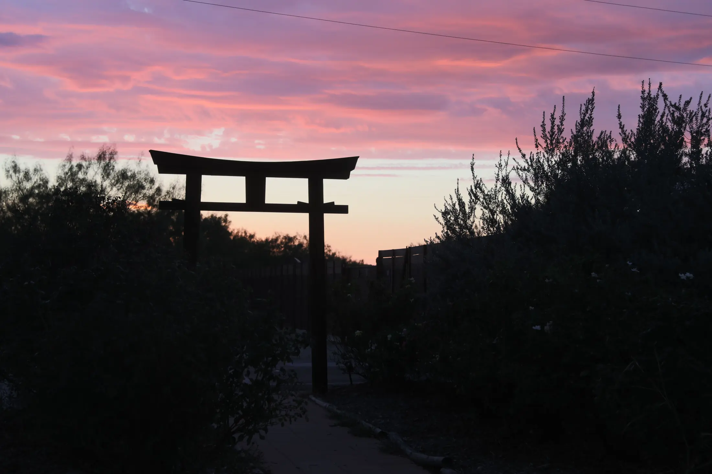

Sacred Grove
Sacred Grove is Blossom Foundation's center for yogic studies and exploration of consciousness in Graham, Texas.

Purpose
The center is being developed as a dedicated space for inner work, disciplined practice, and holistic programs that support spiritual and mental wellbeing.
Current Offerings
- Wellness and spiritual retreats guided by Sri M.
- Holistic programs focused on clearing inner conflict and distraction.
- Yoga training experiences for committed practitioners.
Planned Expansion
- Yoga teacher training programs.
- Consciousness research in collaboration with academic and industry partners.
- Additional infrastructure including learning and arts spaces, wellness areas, and cottages.
Sacred Grove Facility
Meditation Hall
The primary retreat hall for satsang and guided sessions, with natural light, sunset-facing views, and an attached open deck.
Kitchen & Dining Area
Built to support the daily food and dining needs of retreat participants and volunteers.
Yoga Hall
A dedicated hall for structured yogic practice and training sessions.
Dhuni
A sacred fire space used during contemplative and traditional practice settings.
Places for Meditation
- Mother Mary's Grotto
- Buddha Fountain
- Babaji's Grotto
Site Development
The property includes core facilities in active use today and is continuing to evolve with additional wellness and learning infrastructure over time.